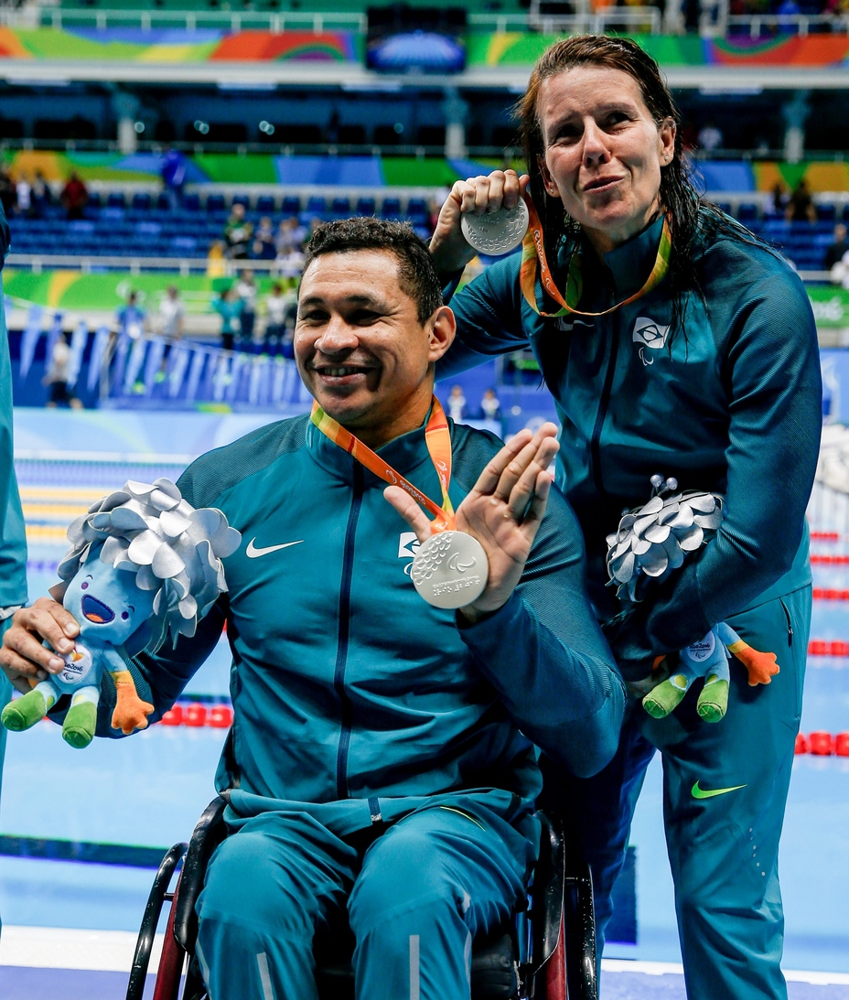

Daniel Dias

Daniel Dias é um atleta paralímpico brasileiro de natação. Ele nasceu em 24 de maio de 1988 em Campinas, São Paulo. Com uma história inspiradora, Dias superou desafios e se tornou um dos maiores nadadores paralímpicos do mundo.
Ele foi diagnosticado com má-formação congênita dos membros superiores e inferiores, o que significa que ele não possui parte dos braços e pernas. No entanto, isso não o impediu de perseguir sua paixão pela natação.
Dias começou a nadar aos 16 anos e rapidamente se destacou. Ele competiu em várias edições dos Jogos Paralímpicos, conquistando inúmeras medalhas de ouro, prata e bronze. Suas provas incluem nado livre, nado de costas, nado borboleta e nado medley.
Além de suas realizações nas piscinas, Daniel Dias também é conhecido por seu compromisso com a inclusão e a motivação de outras pessoas com deficiência. Ele é um verdadeiro exemplo de determinação, superação e resiliência.
Clodoaldo Silva
Clodoaldo nasceu em Natal, Brasil, em 1º de fevereiro de 1979. Ele foi diagnosticado com paralisia cerebral desde o nascimento, mas isso não o impediu de perseguir seus sonhos na piscina.
Clodoaldo competiu em várias edições dos Jogos Paralímpicos e acumulou um impressionante número de medalhas. Ele é conhecido por sua especialização em provas de natação de curta distância, como os 50m e 100m livre, além dos 200m medley.
Durante sua carreira, Clodoaldo estabeleceu vários recordes mundiais em diferentes categorias. Sua velocidade, técnica e determinação o tornaram uma lenda nas piscinas.
Terezina Guilhermina

Nascida em Betim, Minas Gerais, em 3 de outubro de 1978, ela se destacou nas provas de 100 metros rasos, 200 metros rasos e 400 metros rasos.
Terezinha nasceu em uma família humilde e tem doze irmãos, sendo que cinco deles também possuem deficiência visual. Ela mesma possui uma deficiência congênita chamada retinose pigmentar, que gradualmente a fez perder a pouca visão que tinha. Devido à sua cegueira total, ela é classificada nas classes T11 ou T13 dos corredores paralímpicos
Em 2006, Terezinha foi eleita Atleta Paraolímpica do Ano pelo Comitê Olímpico do Brasil (COB). Ela prestou o juramento do atleta olímpico na abertura dos Parapan do Rio 2007. Terezinha é treinada pelo técnico Amauri Veríssimo, que também treina o velocista Lucas Prado. Seu guia nas corridas é o atleta Guilherme Santana
Rosinha Santos
Terezina Guilhermina
Terezina Guilhermina
Terezina Guilhermina
Terezina Guilhermina